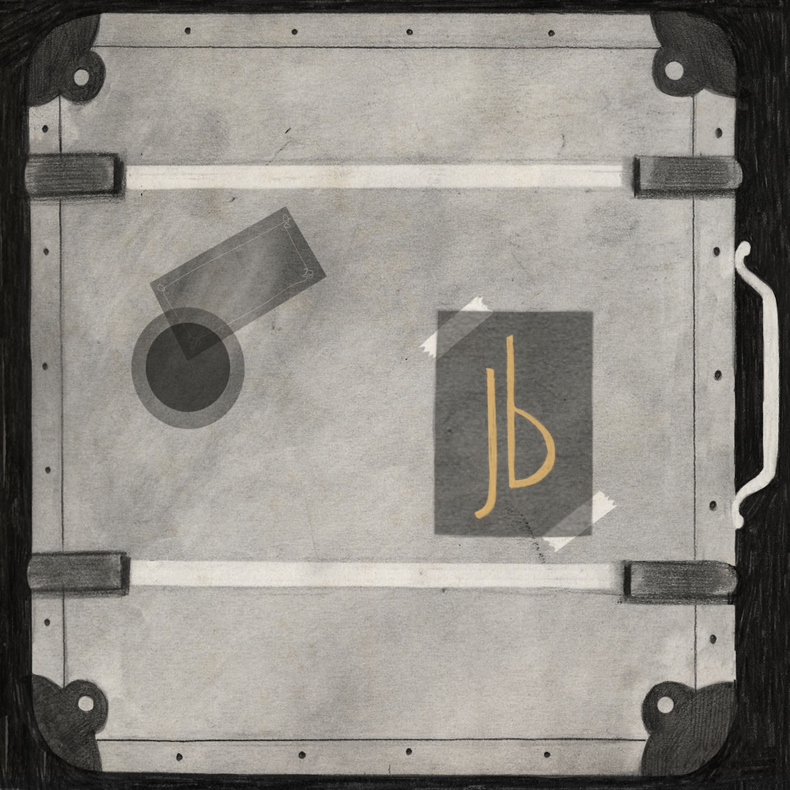
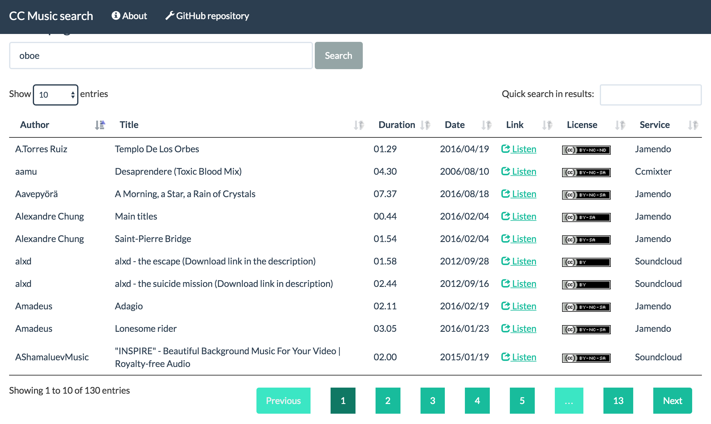

-
Hi, I'm Antonello
I'm a musician, I play in a folk rock band and do some other related things, and a web developer, I work for a digital agency and do some other related things.
Below you'll fine some of the projects I've been working on, and here some travel photos. -
MUSIC
-
Johnny Bemolle's
It's a folk/rock and chamber music project: we find some songs in an old suite case, all of them signed by Johnny Bemolle, a mysterious vagabond musician, and each of them talking about a different place. We arranged and recorded these songs on an illustrated album, called Jb.
Find out more on johnnybemolle.com and Facebook, listen on Spotify, or buy Jb on Bandcamp.
 -
Theatre music
I compose and record music for an amateur acting company (L'Eclettica) theatre shows. On Jamendo you can listen, download and license this music, and use it for your own projects:
www.jamendo.com/artist/455477/antodippo
-
DEVELOPMENT
-
PHP & co.
CC Music Search is a search engine for Creative Commons music, written in PHP on Symfony framework. It fetches music from Jamendo, Soundcloud and other services, by genres, instruments or other keywords.
You can try it on ccmusicsearch.antonellodippolito.com, and see source code on GitHub.
 -
CONTACT